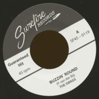

the Swags - Buzzin' Round / The Price Of Love (Single, 2019)
Buzzin' Round
The Price Of Love
© Surefire Records :: [SF45-0119]
Notes
the Swags are project with lead singer Pieter van der Bij (Holland).
reference information: Discogs®
Review
037/366 (Project 366)
Both songs in such a relatively thrilled lyrical tint. But in a different mood. One thing is a binder. This is surprisingly charismatic vocal. Absolutely pearl - both the voice and the manner of performance itself.
Chic boppin' tune with "Buzzin' Round" (where song is pretty uncompromising and even a bit wild on its peaks) leads to real enjoy. Tin and gurgling raw guitars, straight drums, assertive voice. Tasty! Without excesses and no frills tune.
Instead "The Price Of Love" sounds more tragic. And melody with many decorations. the Swags there with their full unification - not only charm of singer from Holland but also the other part of Swags with its kind of traditional (even a bit folk) instrumental solo strumming tune. Sounds like a feature that attracts attention. Good addition to the beauty of acoustic (classic) guitar sound and leap rhythm. Song with powerful ending (a bit sudden though).
Exquisite rockabilly ballad. Not like generic one, but specific one.
The single turned out to be very picturesque. Without any super things, but with a huge amount of very distinctive points and a lot of charms. Roundin' charms of love with overcast mood. Rockabilly songs that can even be not only rockabilly hits. Perhaps, this is explainable for authentic sound and slightly raw. In fact, I could not even compare this band with any band that I, usually, listen to. Their sound is noticeably different. Mostly of singer's manner with definitely this kind of arrangements.